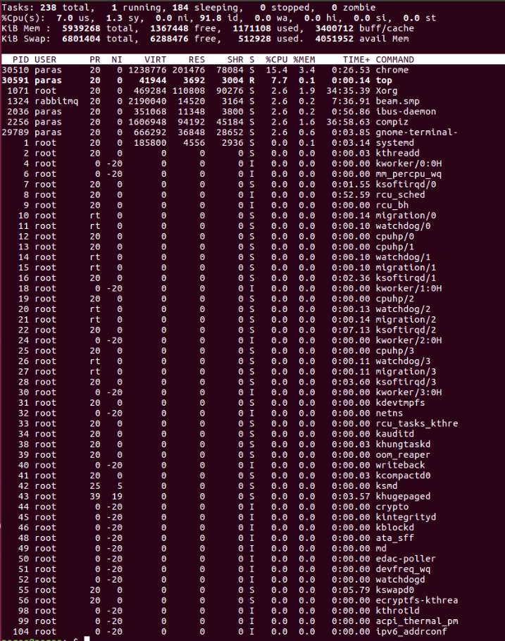
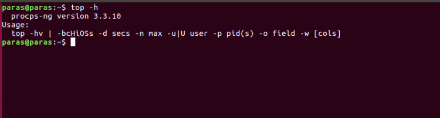

Linux Top
Top command in Linux with Examples
Top command is used to show the Linux processes. It provides a dynamic real-time view of the running system. Usually, this command shows the summary information of the system and the list of processes or threads which are currently managed by the Linux Kernel. As soon as you will run this command it will open an interactive command mode where the top half portion will contain the statistics of processes and resource usage. And Lower half contains a list of the currently running processes. Pressing q will simply exit the command mode.
- PID: Shows task’s unique process id.
- PR: The process’s priority. The lower the number, the higher the priority.
- VIRT: Total virtual memory used by the task.
- USER: User name of owner of task.
- %CPU: Represents the CPU usage.
- TIME+: CPU Time, the same as ‘TIME’, but reflecting more granularity through hundredths of a second.
- SHR: Represents the Shared Memory size (kb) used by a task.
- NI: Represents a Nice Value of task. A Negative nice value implies higher priority, and positive Nice value means lower priority.
- %MEM: Shows the Memory usage of task.
- RES: How much physical RAM the process is using, measured in kilobytes.
- COMMAND: The name of the command that started the process.
Examples: 1) Exit Top Command After Specific repetition: Top output keep refreshing until you press ‘q‘. With below command top command will automatically exit after 10 number of repetition.
top -n 102) Display Specific User Process
top -u paras3) Highlight Running Process in Top: Press ‘z‘ option in running top command will display running process in color which may help you to identified running process easily
4) Shows Absolute Path of Processes: Press ‘c‘ option in running top command, it will display absolute path of running pro
5) Kill running process: You can kill a process after finding PID of process by pressing ‘k‘ option in running top command without exiting from top window as shown below.
6) Sort by CPU Utilisation: Press (Shift+P) to sort processes as per CPU utilization.
7) Shows top command syntax:
top -h ) Batch Mode : Send output from top to file or any other programs.
top -b9) Secure Mode : Use top in Secure mode.
top -s10) Command Line : The below command starts top with last closed state.
Top -c11) Delay time : It tells delay time between screen updates.
Top -d seconds.tenths